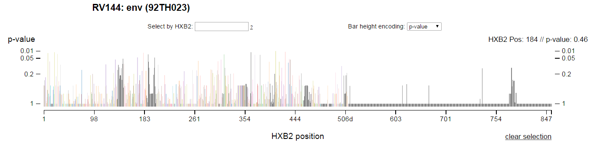

SIEVE
Visualizing vaccine efficacy

For the final project in Jeff Heer's "Data Visualization" class, a couple of classmates and I built a tool for HIV researchers at Fred Hutch Research Center. The result of the project was SIEVE (Statistical Interactive Explorer of Vaccine Efficacy).
SIEVE is an intereactive visualization for exploring breakthrough sequence data from vaccine efficacy trials. Specifically, SIEVE aids the process of "sieve analysis", which compares the genetic sequences of viruses isolated from infected vaccine versus placebo recipients. The visualization allows researchers to study the effect of the vaccine at the level of amino acids in the breakthrough viruses and find statistically significant differences in the groups.
We recently added many more datasets to SIEVE, making it not only a powerful visualization and analysis tool but also a unique source for consolidated sieve analysis datasets.
Fremont Bridge bicycle data
Tracking cyclists' ridership
 Image credit: Seattle PI
Image credit: Seattle PI
In 2012, Seattle DOT installed bike counters on the Fremont Bridge. Since then, hourly counts of the number of cyclists crossing each side of the bridge have been piling up. Graham Clenaghan and I took to visualizing the data. We created a simple interactive tool to let you explore bicycle ridership across the bridge as a function of parameters like weather, time of the day, and time of the year.
Flat running routes
Finding stress-fracture-friendly ways to stay active using optimization
From the Pi Day Dash on the most epic Pi Day of the century: 3/14/15. My wife and I met as undergraduates founding the Math Club ('09 club t-shirts on display in the image). How could we miss this opportunity? (Image credit: Seattle PI)
My wife and I like to run. We don't put in a ton of miles or run at a pace many would find impressive, but it is something we have always done together.
For awhile she was struggling with a stress fracture in her foot, which seemed to tolerate running on flat ground but would flare up when we encountered changes in elevation. I decided to take the opportunity to demonstrate the breadth of problems that optimization can tackle while hopefully improving her health at the same time.
King County and the city of Seattle have an excellent GIS data portal from which I was able to download a DEM for the city and a shapefile with the network of streets. Coupled together with a little computation in GIS, they offer the mean slopes for every street.
The optimization model minimized the cumulative sum of the slopes selected to be part of our running route (the final model will be posted below shortly). To eliminate cycling and ensure connectivity, I drew from the approach in Conrad et al. (2012). The solution pointed to a route through Myrtle Edwards and Centennial Park, which is indeed quite flat.
In the end, this exercise did not help solve the issues of the stress fracture. That happened with rest and physical therapy rather than a change in run routes. But the model worked, and the solution points to a route that terminates at a Danish pastry shop, so I think it still qualifies as a win!